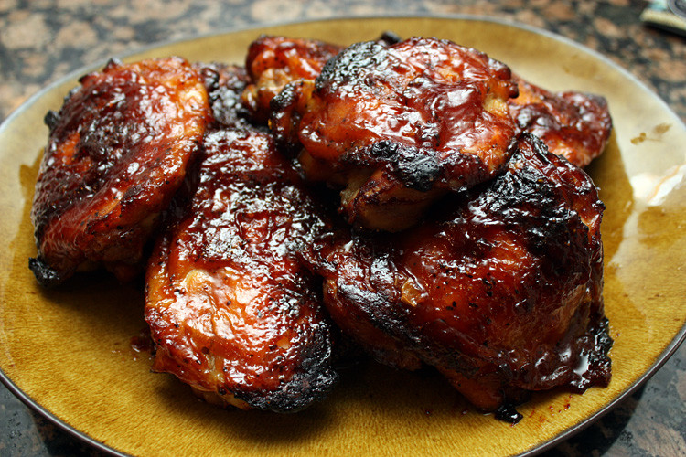

BBQ Chicken

Description
BBQ chicken is one of the staples of summer food, though really it can be eaten any time of the year. This recipe will give you a no frills way to create moist, delicious, bbq chicken on the grill.
While this method is described for the grill it could also be cooked in the broiler in the oven with little modification.
Ingredients
- Chicken thighs-We recommend skin on
- 1 cup olive oil/4 chicken thighs
- 1 tbsp salt/4 chicken thighs
- 1 tsp pepper/4 chicken thighs
- Your favorite bbq sauce
Steps
- Salt the chicken thighs on both sides and place them into a ziploc bag
- Pour the olive oil into the bag, squeeze out all the air and seal the bag. Leave this to mariante for at least 4 hours
- After marinating remove from bag and place onto a cutting board or rack to let the excess oil drip away
- Apply more salt and the pepper to the chicken
- Preheat the grill to med high
- Place the chicken onto the grill skin side down for approx. 4-7 minutes, but be careful to monitor that it doesn't burn
- Flip the chicken and before placing back over direct heat brush on a liberal amount of bbq sauce
- Cook approximately 10 minutes or so, flip, and apply more bbq sauce
- After 1 to 2 minutes, flip and apply more, that's right even more! bbq sauce
- Chicken is done when internal temperature reaches 165 F, be sure to take temperature from close to the bone to ensure food is safely cooked